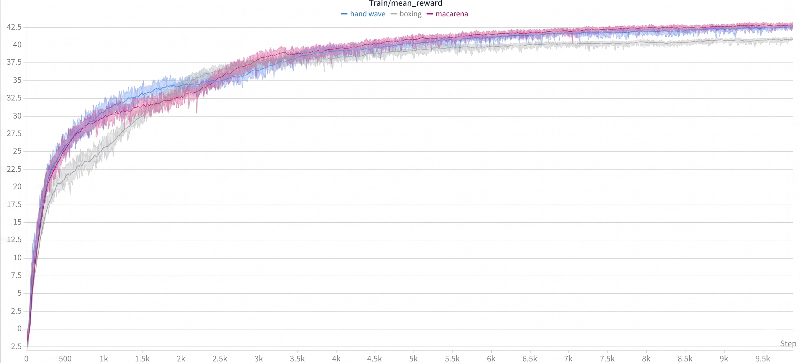
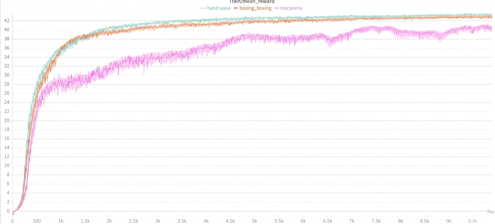

Teaching humanoid robots expressive, athletic behaviors has historically required expensive Motion Capture (MoCap) infrastructure — placing this capability out of reach for most academic and competition teams. This paper presents ViMoS, an open-source, end-to-end pipeline that transforms a single monocular video into a deployable robot control policy using only a consumer-grade GPU (tested on an NVIDIA RTX 4090).
By integrating GENMO for generative motion estimation, GMR for kinematic retargeting, and BeyondMimic for reinforcement learning inside NVIDIA Isaac Lab, ViMoS enables teams to deploy whole-body behaviors onto physical humanoids such as the Unitree G1 and Booster T1. We validate the pipeline by successfully training and transferring four qualitatively distinct motion skills. A fully containerized Docker workflow minimizes setup friction, making expressive humanoid motion accessible to the broader community.
Expressive whole-body motion is a cornerstone of humanoid robotics, yet creating new behaviors remains prohibitively expensive and technically demanding. High-fidelity motion data traditionally relies on Motion Capture (MoCap) systems, which carry hardware costs in the tens of thousands of dollars and require calibrated laboratory environments — infrastructure unavailable to most academic and competition teams.
Beyond hardware, a significant software fragmentation barrier exists. Tools for video-based pose estimation, kinematic retargeting, and physics-based policy learning often reside in isolated repositories with incompatible dependencies. Integrating these into a functional pipeline typically requires weeks of engineering effort, a process often lost between competition cycles. Notably, even teams with access to MoCap systems still require the retargeting-to-deployment stages of such a pipeline. While open-source tools such as video2robot address the retargeting step from video, they do not include policy learning or sim-to-real transfer, leaving these critical stages to the user.
ViMoS addresses both barriers with a unified, containerized pipeline. No MoCap hardware is required — a single monocular smartphone video is sufficient. By integrating GENMO, GMR, and BeyondMimic within Isaac Lab, ViMoS provides a documented, end-to-end tool deployable with a single Docker command. Validated on a consumer GPU (NVIDIA RTX 4090) with peak VRAM under 12 GB, ViMoS enables the rapid creation of diverse skills — including dancing, handshaking, and running. In competitive settings such as Humanoid Competition, where hardware and preparation time are tightly constrained, accessible motion imitation pipelines directly translate into richer and more capable robot behaviors on the field.
The ViMoS pipeline is composed of four specialized frameworks that bridge the gap from visual perception to physical execution. Each module addresses a specific challenge of the embodiment transfer process: from raw video to hardware-ready control policies.
The first stage employs GENMO (Generalist Model for Human Motion), a diffusion-based framework designed for robust pose estimation from monocular video. GENMO fits an SMPL parametric body model — a skeleton of 24 joints with 6,890 surface vertices — to each video frame, producing a temporally coherent 3D joint sequence. Unlike traditional regressive models, GENMO utilizes an Asymmetric Diffusion Transformer architecture with 16 layers of RoPE-based Transformer blocks, with pre-trained checkpoints available at the official repository.
Once the human motion is extracted, GMR performs the kinematic mapping to the robot's specific topology. GMR first applies non-uniform local scaling to match the human reference segment lengths to those of the target robot, then runs an optimized differential IK solver (Mink) that minimizes the Cartesian error between human keypoints and robot end-effectors while enforcing joint limits. Adding support for a new robot requires only a URDF model and a keypoint correspondence file, with no changes to the solver itself.
The control policy is trained with BeyondMimic inside NVIDIA's Isaac Lab simulation, leveraging GPU-parallelized Reinforcement Learning. The within-motion failure-aware bin resampling mechanism identifies frames where the robot frequently loses balance and increases their sampling frequency during training, significantly accelerating convergence. A compact tracking reward combines local joint imitation with world-frame global constraints, reducing long-term drift in locomotion tasks. The RL backend is exposed through a single task-configuration file, making it straightforward to substitute an alternative training strategy without modifying the rest of the pipeline.
For the Unitree G1, ViMoS exports policies in ONNX format and integrates them into a ROS 2 Jazzy controller node. For the Booster T1, the framework uses TorchScript JIT for high-frequency low-level control at up to 200 Hz. Deploying to an unsupported robot requires non-trivial hand-engineering: constructing the keypoint correspondence file, tuning PD gains, and integrating the task configuration with the robot's SDK.
ViMoS is fully containerized with Docker, so the only requirements are a Linux machine with an NVIDIA GPU (RTX 3090+), Docker with nvidia-container-toolkit, and a free Weights & Biases account for the artifact registry. You will also need a few model files (the GENMO s050000.ckpt and the SMPL / SMPL-X body models); drop the downloaded archives in the repo root and run python scripts/download_assets.py to install them automatically.
git clone --recurse-submodules https://github.com/AKCIT-RL/ViMoS.git
cd ViMoS
python scripts/download_assets.py # install checkpoints & body models
docker compose pull genmo gmr # or: docker compose build (Stages 1–2)
docker compose --profile wbt build # Stage 3 (Isaac Lab training)A single script runs GENMO and GMR end-to-end and outputs the retargeted motion as a CSV ready for training:
python scripts/video_to_robot_docker.py --video my_video.mp4 --robot booster_t1
# or: --robot unitree_g1 | add --headless for SSH | add --record_video to save visualizationConvert the CSV to NPZ, upload to W&B, then launch PPO training in Isaac Lab:
cd train/whole_body_tracking
python scripts/csv_to_npz.py --input_file motion.csv --output_name my_motion --robot booster_t1 --headless
python scripts/rsl_rl/train.py --task=Tracking-Flat-T1-Wo-State-Estimation-v0 --num_envs 4096 --headlessFor Unitree G1 use --task=Tracking-Flat-G1-v0. After training, export with play.py to get a .pt (T1) or .onnx (G1) policy file.
# Unitree G1 via ROS 2
ros2 launch motion_tracking_controller mujoco.launch.py policy_path:=/path/to/policy.onnxFor Booster T1, see deploy/booster_deploy/README.md.
For detailed instructions, troubleshooting, and advanced options, visit the GitHub repository.
To stress-test the generality of ViMoS, we trained policies for a broad set of 21 qualitatively distinct motions on the Unitree G1, spanning single-arm gestures (wave, CR7 celebration), full-body dances (Macarena, Like Jennie, What is Love), dynamic locomotion (running, trot, side walking, jump, bunny hop), sport skills (trivela, paradinha, pedalada, boxing), and balance challenges (one-foot balance, stealth walk, square walk, get-down-get-up, drunk walk, jumping puddle, polichinelo). All trained policies converge to stable reward plateaus without falling, confirmed by visual inspection of simulation rollouts.
For the Booster T1, we trained the same pipeline on three representative motions. To provide a clean quantitative comparison, the training reward curves below focus on three kinematically simple skills — wave, boxing, and Macarena — which serve as controlled baselines across both platforms. Differences in absolute reward magnitude reflect episode duration rather than tracking quality. Selected policies were successfully deployed on physical hardware, as shown in the Real Deployment section below.
Booster T1
Trivela
Boxe (Boxing)
Aceno (Wave)
Unitree G1
CR7
Pedalada
Jump
Trivela
Booster T1

Unitree G1

Booster T1
Aceno (Wave)
Boxe (Boxing)
Macarena
ViMoS lowers three compounding barriers — cost, fragmentation, and hardware uncertainty — that currently prevent most teams from developing expressive humanoid behaviors. By unifying GENMO, GMR, and BeyondMimic into a single containerized workflow and validating it on consumer hardware across distinct motion skills, we demonstrate that high-quality motion imitation is no longer the exclusive domain of well-resourced labs.
We release ViMoS as a fully open-source tool and invite the community to extend and build upon it.
ViMoS integrates four open-source components. Please refer to each project for credits, licenses, and upstream documentation.
This work has been supported by the Advanced Knowledge Center in Immersive Technologies (AKCIT), with financial resources from the PPI IoT of the MCTI grant number 057/2023, signed with EMBRAPII. The authors are also grateful to the Fundação de Amparo à Pesquisa do Estado de Goiás (FAPEG) for the financial support provided for this research (Grant 64448878/2024). We thank the authors of GMR, GENMO, and BeyondMimic for their open-source contributions.
 Paper
Paper arXiv
arXiv YouTube
YouTube Code
Code